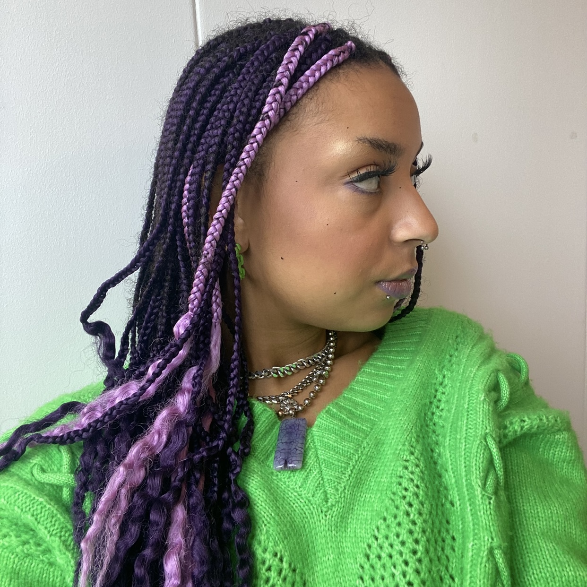

Over mij

Wie ben ik?
Ik ben Mtima en ik ben 21 jaar oud. Ik zit in mijn eerste jaar Communicatie & Multimedia Design aan de HvA.
waarom doe ik dit
Als opdracht van 'de lieve groene stad' heb ik deze website gemaakt, om de weg geef winkels in Amsterdam in het licht te zetten. Daarnaast hoop ik met deze website het concept van de wegggeef winkels duidelijk te maken en te laten zien waarom ze zo belangrijk zijn in het behouden van de groene stad.
favoriete spots
Westerpark
Noorderpark